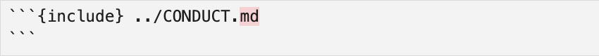

26 Packaging: Python
Learning Objectives
- Be able to distinguish between essential software package elements (required to make a minimal software package) and those that are not essential but act to improve the user and developer experiences.
- Define what a namespace is.
- Explain the role of the code within the following software package files:
- Python
pyproject.toml__init__.pydocs/*.github/workflows/ci-cd.yml
- Explain at a high level how the Cookiecutter project template tool works.
- Generate well formatted function and package-level documentation for software packages using available tools (e.g., numpy-style dosctrings and Sphinx in Python)
26.1 Essential Python package files
Using the project layout we recommend for this course, here is a Python package structure with only the most essential files.
pkg
├── pyproject.toml
└── src
└── pkg
├── __init__.py
└── module.pyWhat do each of these do?
pyproject.tomlstores all the metadata and install instructions for the package.The presence of the
srcdirectory defines the code that will form the installable version of your package (meaning that users only get this code when they install the package, and that developers must install the package before running their tests).__init__.pytells Python that a directory is a package. They can be left empty, or they can also be used to add objects to the package’s namespace, provide documentation, and/or run other initialization code.module.py(this one can be named something else!) contains the functions you would like to share with your package users.
26.2 Getting to know a pyproject.toml file’s contents
Here is an example pyproject.toml file:
[tool.poetry] ┐
name = "pycounts_tt_2024" │
version = "0.1.0" │ Package metadata
description = "Calculate word counts in a text file!" │
authors = ["Tiffany Timbers"] │
license = "MIT" │
readme = "README.md" ┘
[tool.poetry.dependencies] ┐
python = ">=3.9" │ User function dependencies
matplotlib = ">=3.8.2" ┘
[tool.poetry.dev-dependencies] ┐
│
[tool.poetry.group.dev.dependencies] │
pytest = ">=7.4.4" │
pytest-cov = ">=4.1.0" │ Developer dependencies
jupyter = ">=1.0.0" │
myst-nb = {version = "^1.0.0", python = "^3.9"} │
sphinx-autoapi = "^3.0.0" │
sphinx-rtd-theme = "^2.0.0" ┘
[build-system] ┐
requires = ["poetry-core>=1.0.0"] │ Package build dependencies
build-backend = "poetry.core.masonry.api" ┘Almost everything inside this file is customizable based on your package. Even the build system! pyproject.toml can also be used with other build tools such as setuptools and flit! If you are interested in learning more, checkout the Python Packaging Tools guide from PyOpenSci.
26.3 Getting to know a __init__.py file’s contents
As mentioned earlier, this file can serve it’s essential package function of telling Python that this directory is a package by just existing and being empty. It can however serve other purposes. Let’s discuss the code that exists in the py-pkgs-cookiecutter template:
The py-pkgs-cookiecutter we used to create our pycounts package (Section 3.2.2) already populated our __init__.py file with this code for us:
# read version from installed package
from importlib.metadata import version
__version__ = version("pycounts")Because this code is in __init__.py is executed when the package is imported (this is the case for all __init__.py files, we can ask for the package version with Python code like this:
import pycounts
pycounts.__version__0.1.0In the code in __init__.py we get the version from the package metadata, that is derived from pyproject.toml. This allows us to only have to update the version of our package in one place when we bump to a new version.
What other kinds of interesting things can we do with __init__.py? Well we can use it to control the import behavior of a package. For example, there are currently only two main functions that users will commonly use from our pycounts package: pycounts.count_words() and plotting.plot_words(). Users have to type the full path to these functions to import them:
from pycounts.pycounts import count_words
from pycounts.plotting import plot_wordsIf we import those core functions in pycounts’s __init__.py file, which would bind them to the package namespace, we can make our user’s experience of loading them easier!
# read version from installed package
from importlib.metadata import version
__version__ = version(__name__)
# populate package namespace
from pycounts.pycounts import count_words
from pycounts.plotting import plot_wordsThe functions are now bound to the pycounts namespace, so users can access them like this:
import pycounts
pycounts.count_words<function count_words>What is a namespace again? A “namespace” is a set of names that are used to identify and refer to objects of various kinds (source: Wikipedia).
26.4 docs/* and .github/workflows/ci-cd.yml
We will cover both these topics in greater detail later (docs/* in the documentation chapter/lecture and .github/workflows/ci-cd.yml in the continuous integration and deployment chapter/lecture), but for now it’s helpful to get a bit better of an idea of these files and what they are doing.
26.4.1 docs/*
To keep things organized, to and to make the package documentation easier to automate, we keep the documentation files in the docs directory and use a Makefile (or make.bat on Windows) therein to automate their rendering.
docs
├── changelog.md
├── conduct.md
├── conf.py
├── contributing.md
├── example.ipynb
├── index.md
├── make.bat
└── requirements.txt (deprecated)Note that many of these files also commonly exist in the root of projects and people expect to find them there!!! These include:
- changelog.md
- conduct.md
- contributing.md
So what we have done is pointed the doc/*.md’s of these files to the contents these files in the project root. And at rendering, their content will be used instead! If you look at the raw source of one of these files (e.g., conduct.md) you will see:

This helps keep our docs up to date by not having two places to update them!
conf.py is a configuration file that specifies style and formatting for the documentation. In this course we will not be modifying it, but if you wanted you can! To do this, please first read the docs for Sphinx configuration here.
The requirements.txt file in the pypkgs-cookiecutter template is now deprecated and will be removed in a future version. All dependencies are now managed by pyproject.toml.
26.4.2 .github/workflows/ci-cd.yml
This file contains automation code for continuous integration and delivery of our Python software package, reading the steps in this file you will see that it does the following:
- Continuous integration tasks:
- installs your package
- runs the test suite
- calculates test coverage
- Continuous deployment tasks:
- bumps the package software version, as well as prepares and creates a GitHub release of the package
- builds the package
- publishes it to the package repository (i.e., TestPyPI or PyPI, or both)
When we first start building our packages, the GitHub Actions workflows for most of these things will fail. That is to be expected! As you complete the tasks for setting each of these up (e.g., writing tests and package code, setting up authentication to PyPI using GitHub secrets, etc) then the GitHub Actions workflows should start passing. This is a consequence of the philosophy of the pypkgs-cookiecutter template tool.